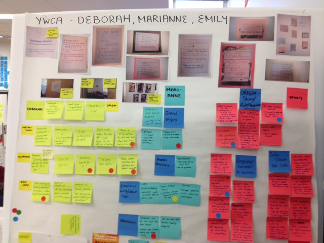
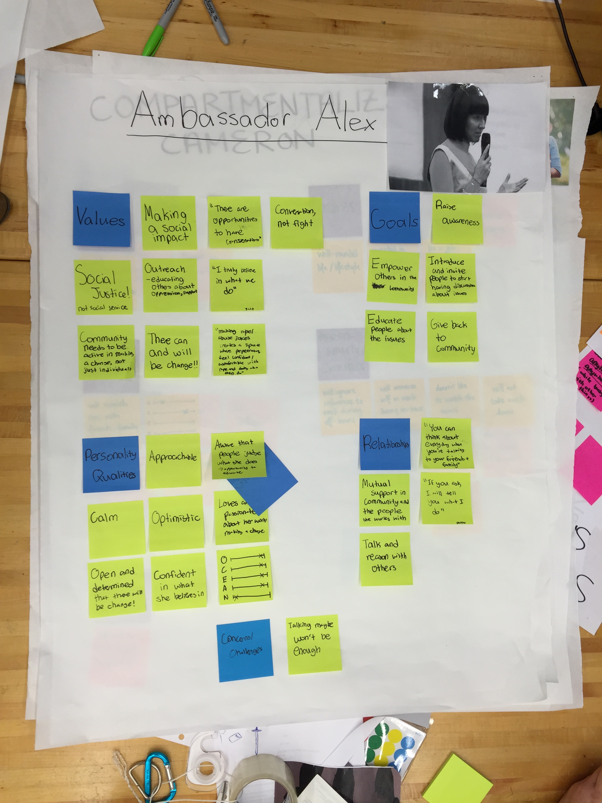
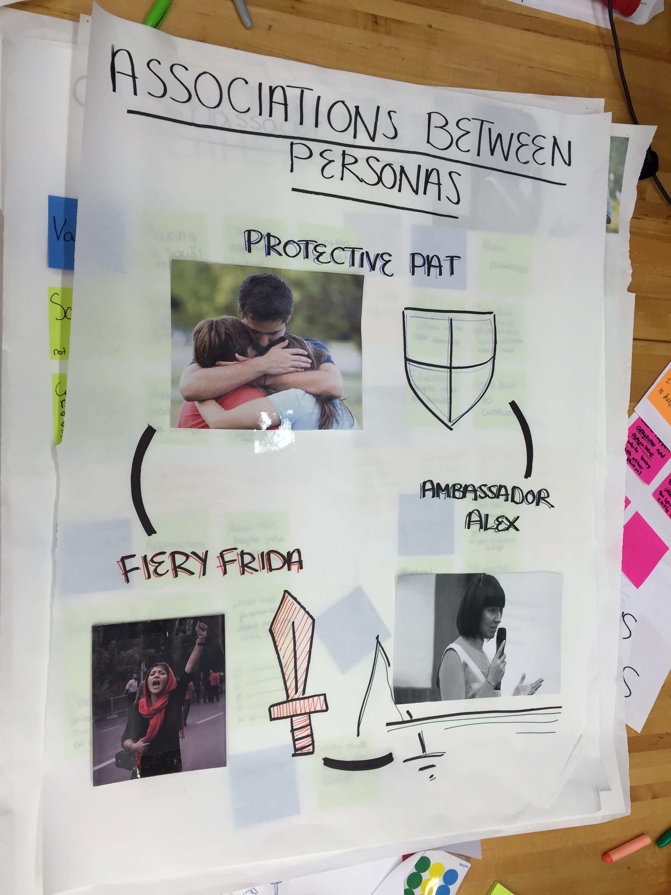
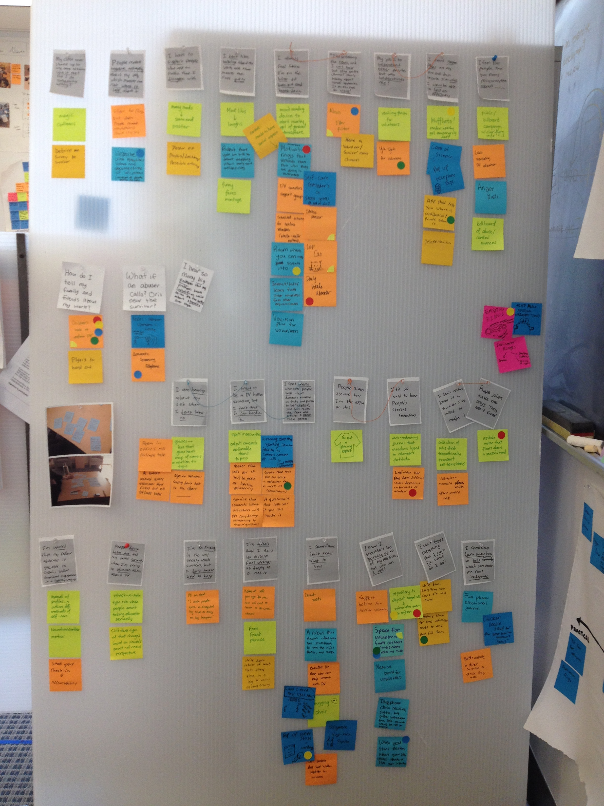
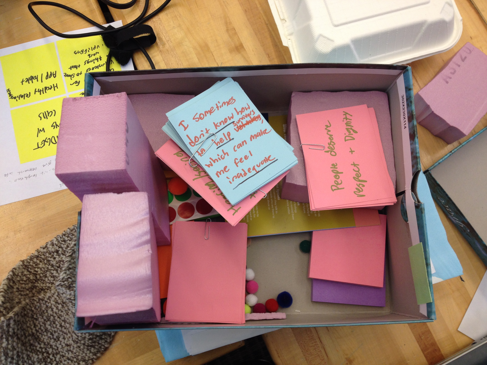
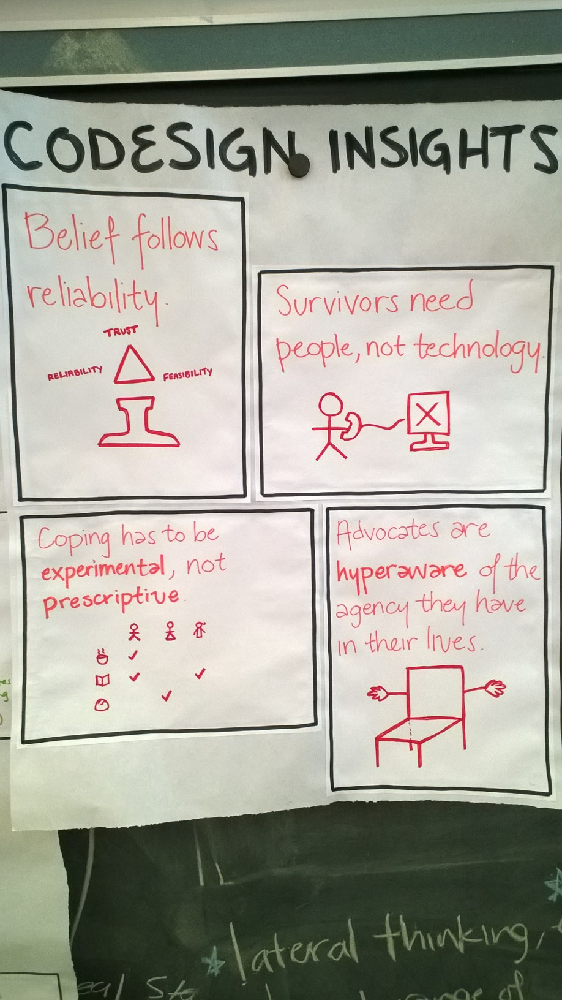
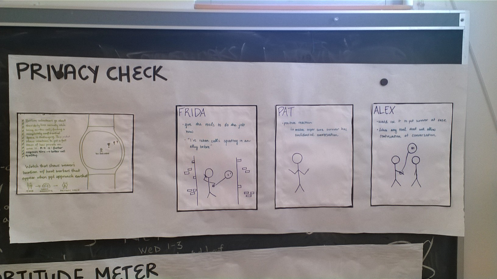
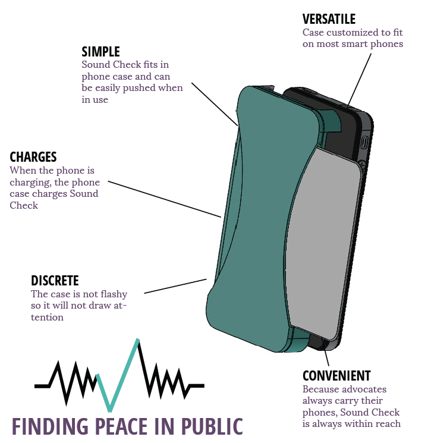
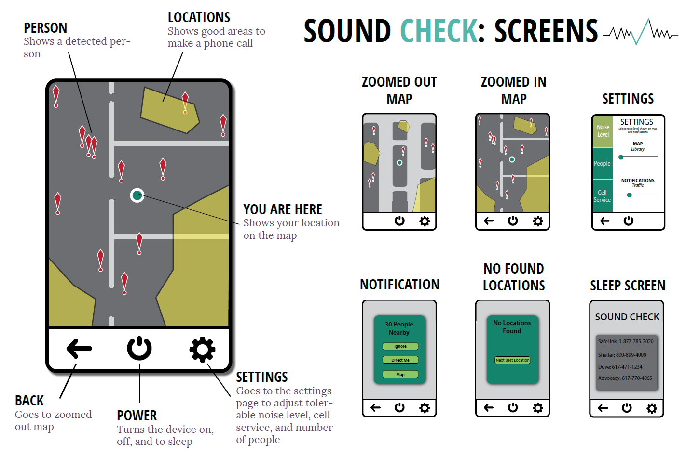

SOUND CHECK: FINDING PEACE IN PUBLIC
Over the course of a semester, I worked in a team of five to conceptualize a product for sexual assault/domestic violence hotline workers. The product was a phone case that discretely assists workers in finding confidential, quiet spaces to take calls while going about their day-to-day lives.
Our team was highly integrated; everyone did a little of everything. I conducted informational interviews and constructed user archetypes to gain an understanding of the user group. Once we decided on an idea to pursue, I conducted UI/UX user tests to refine the product's form, interaction, and character and built the physical mockup.
Role: Human-centered designer
For: User-Oriented Collaborative Design
Audience: Sexual assault / domestic violence hotline workers
Date: Spring 2015
Product overview
Product interface
User interactions
Product criteria








